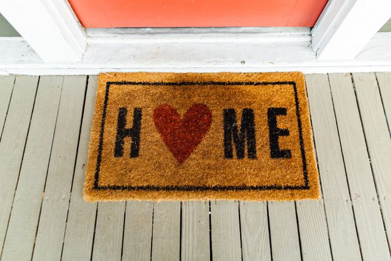

If you're curious about a specfic section, you can jump to:
The people in my life are a big part of what makes a place feel like home.
My family has always been an important part of my life, and even when we are far apart, their love and support remain constant.
My church here in Ottawa is also a huge part of my life. It is where I found Jesus and where my love for Him continues to grow.
Through my church, I have found a community of people who encourage me, support me, and help me grow.
Together, my family and my church have played a significant role in shaping who I am today and will always hold a special place in my heart.
There are many things that get me excited! Some of the things I love include: